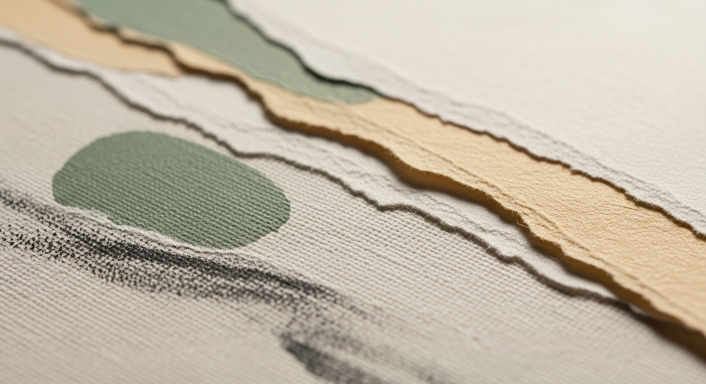
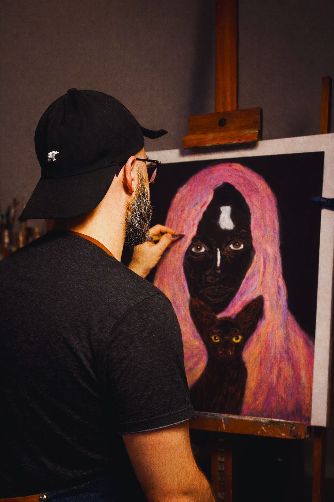
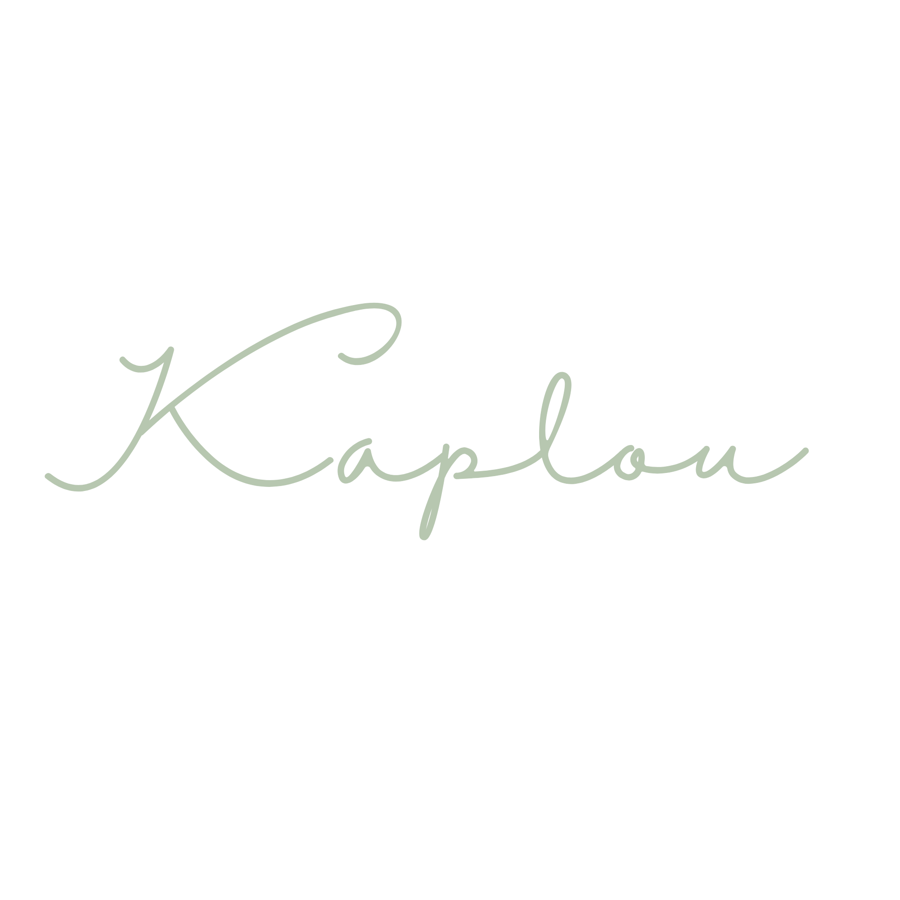

« Je crée des totems.
Des présences qui veillent,
entre instinct et humanité. »
Chaque œuvre est une présence.
Un fragment d'émotion, un lien invisible
entre l'instinct et la conscience.
Une tentative de donner forme à ce qui nous traverse.

Depuis l'enfance, j'observe.
Les détails minuscules, les pétales, les insectes, les
objets oubliés.
Créer a toujours été une façon d'habiter le monde à
distance.
« Je crée des œuvres qui demandent du temps.
Je ne cherche pas à impressionner, je cherche à toucher. »
Je ne peins pas seulement des formes.
Je cherche à rendre visible ce qui circule en
silence.
Des fragments d'histoires qui n'ont pas toujours de
mots, mais qui existent pourtant.
La création est devenue un passage.
Un moyen de traverser mes émotions, de leur donner une
matière, une présence.
Je travaille de manière instinctive, en mêlant figures
humaines, animales et éléments naturels.
Chaque œuvre devient une rencontre, un équilibre entre
force et sensibilité.
Parfois, j'intègre directement le vivant à mes
créations.
Plantes, matières organiques, structures minérales…
comme si l'œuvre continuait de respirer au-delà de moi.
Autodidacte, j'ai construit mon langage en dehors des
cadres, guidé par l'intuition et l'expérimentation.
Mon travail a notamment été exposé en Belgique, lors
d'une collaboration avec Iz'art à Iseghem.
Aujourd'hui, je crée pour relier.
Relier l'humain à lui-même, à l'animal, à la nature et à
la matière.
« Chacune de mes œuvres est une pièce unique,
réalisée à la main dans mon atelier. »

Les œuvres naissent d'un mélange de matières, de couleurs, de nature et de récits anciens.
Contes, légendes, folklore du Nord, univers fantastiques.
Rien n'est figé. Tout est passage.
À partir de photographies et d'échanges, je crée des
portraits sensibles.
Chaque œuvre devient un souvenir, une émotion, un moment de
vie transformé par la peinture…
Une envie, un projet ?
Pour toute demande, échange ou rencontre autour d'une œuvre.